Communicate the evening reading experience, rather than just another coffee offer.

Original synthetic production asset. This fictional client and venue do not represent a real organisation.
The person behind the brief
Mara, owner
Mara has run a neighbourhood café for seven years. Customers know the morning takeaway queue, but few know that a quiet reading corner is now open in the evening. A previous photograph of a paper cup reinforced the wrong message. Mara needs an invitation that makes staying feel possible.
The audience
Nearby residents and older teens who want a relaxed place to read after school or work.
Approved factual copy
- Evening reading at Harbour Bean
- Thursday · 6–8 pm
- Harbour Bean · 14 Wharf Lane
- Bring a book. Take a seat.
- No booking required. Drinks sold separately.
You may write your own headline and reorder this information. Retain the facts and practical instructions. Dates are fictional weekday descriptions; no real scheduled event is implied.
Boundary: Do not imply that drinks are free, that the space is a library, or that the supplied synthetic café is a real venue.
Your creative territory
You may use an atmosphere, a meaningful object, a typographic invitation, an original illustration or a combination. Warmth does not require a brown poster.
The logo identifies the client. Keep its proportions and readable space around it; do not use a photograph as the client's trademark. Palette roles and title fonts below are starting directions. You may propose a purposeful alternative palette or type system and defend it at the planning conference. No layout is prescribed.
Production scope: 2550 × 3300 px RGB print study and 1080 × 1350 px RGB screen adaptation. Keep separate layered PSDs or genuinely editable artboards. Export PNGs. The school printer/profile must be checked before a press-ready claim.
Download this complete kitBrand ingredients
Colour SVG · Dark SVG · Light SVG · Transparent PNG
Type candidates: Georgia: expressive title candidate; Arial: detail and practical information. Use school-installed fonts; no installation is required. If a candidate is unavailable, use an available serif/sans-serif equivalent and record the substitution.
ACO swatches · ASE palette · CSS values · Colour-role record
Files have deterministic colour values; Photoshop import/manual-add and artboard captures are awaiting the native run. See the software lab. Palette harmony alone does not guarantee readable text.
Choose your raw materials
Complete source and licence links
Start with the reading-corner photo plus one book, table or coffee detail. Compare an object-led concept with a scene-led concept. Use only what earns a role in your concept. You may combine, crop or adapt permitted assets and add your own credited work. The photographs show their source settings, not this fictional business. Do not imply endorsement. For CC BY-SA source derivatives, retain the source's share-alike licence and credit in the delivered work; keep other assets' rights identifiable.
Harbour Bean original teaching scene
1536 × 1024 · OpenAI image generation, art-directed for Chad
Original AI-assisted classroom production asset · source · synthetic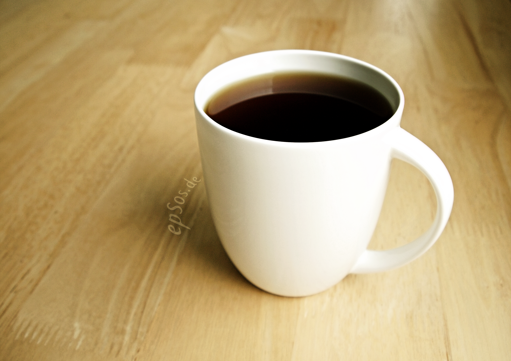
Black Coffee and Tea in White Cup is Hot.png
3840 × 2719 · epSos.de
CC BY 2.0 · sourceCoffee - Flickr - -Filippo.jpg
2357 × 2000 · Filippo Diotalevi from London, United KIngdom
CC BY 2.0 · source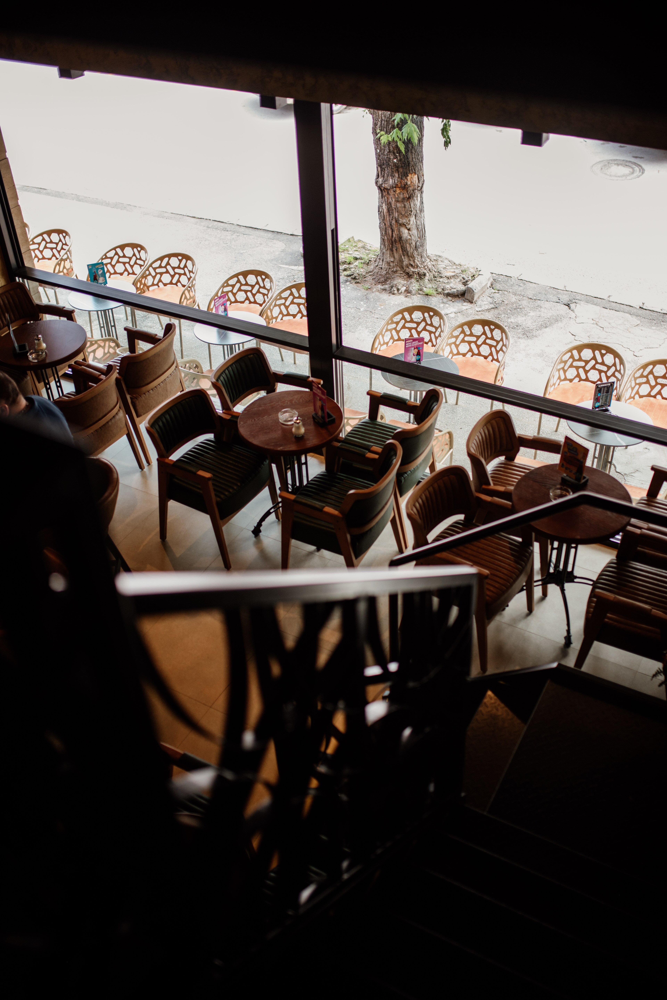
Cozy cafe interior with stylish seating and large windows on a quiet street.jpg
3840 × 5752 · Shixart1985
CC BY 2.0 · source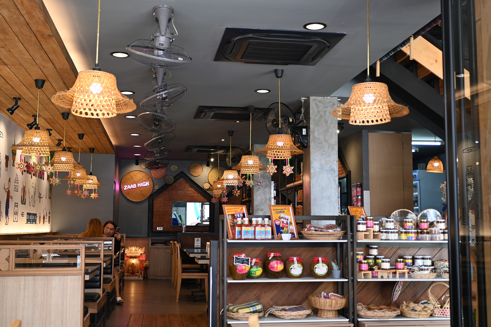
DSC 9844 Cozy cafe interior with warm hanging wicker lamps neatly arranged shelves of treats and inviting wooden seating.jpg
3840 × 2560 · PattayaPatrol
CC BY-SA 4.0 · source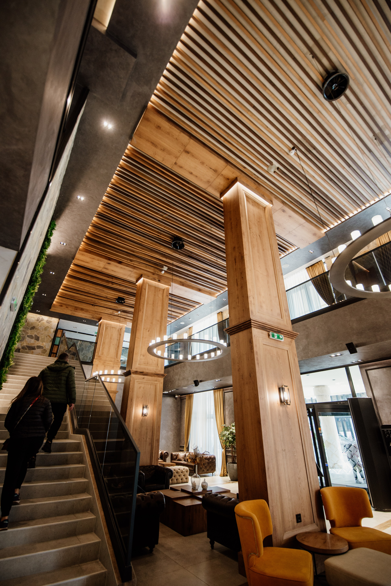
Modern interior design of a chic café showcasing wooden accents and spacious layout.jpg
3840 × 5752 · Shixart1985
CC BY 2.0 · source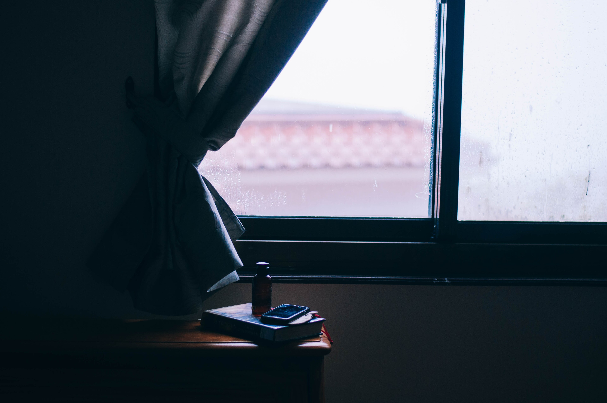
Rainy window and table book (Unsplash).jpg
3840 × 2550 · Rosalind Chang rosalindjchang
CC0 · sourceRelaxed individual leans on table while reading book in cozy cabin kitchen.jpg
3840 × 2555 · Shixart1985
CC BY 2.0 · source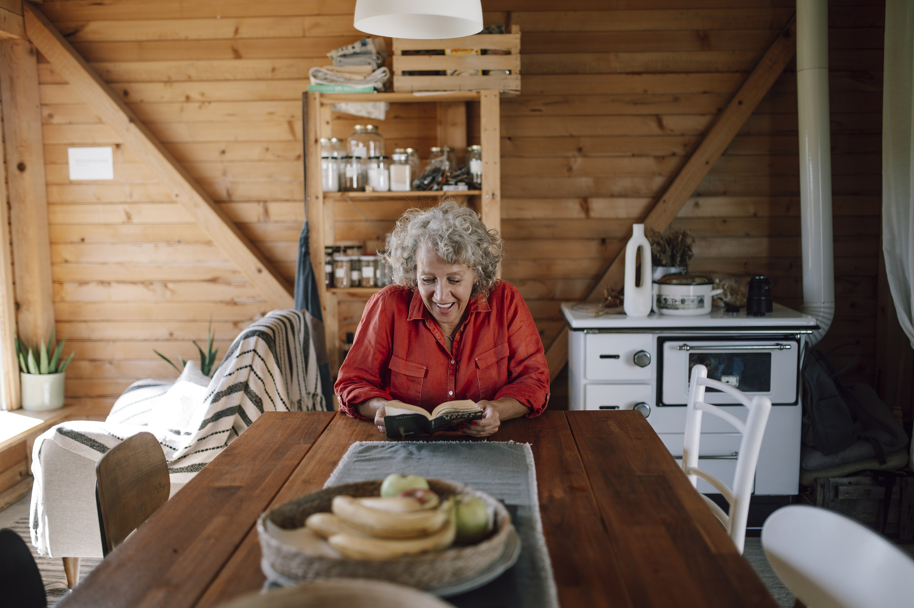
Senior woman enjoys reading book at wooden table in cozy cabin.jpg
3840 × 2555 · Shixart1985
CC BY 2.0 · sourceWoman laughing while reading a book at the table.jpg
3840 × 2563 · Shixart1985
CC BY 2.0 · sourceCoffee Beans (2732722806).jpg
3840 × 2560 · Harald Hoyer from Schwerin, Germany
CC BY-SA 2.0 · sourceCoffee Beans Photographed in Macro.jpg
3840 × 2550 · Photographer Robert Knapp www.modernartphotograph.com
CC BY-SA 3.0 · source Coffee beans - ziarna kawy.jpg
Coffee beans - ziarna kawy.jpg
1539 × 1800 · Alina Zienowicz (Ala z), e-mail
CC BY-SA 3.0 · source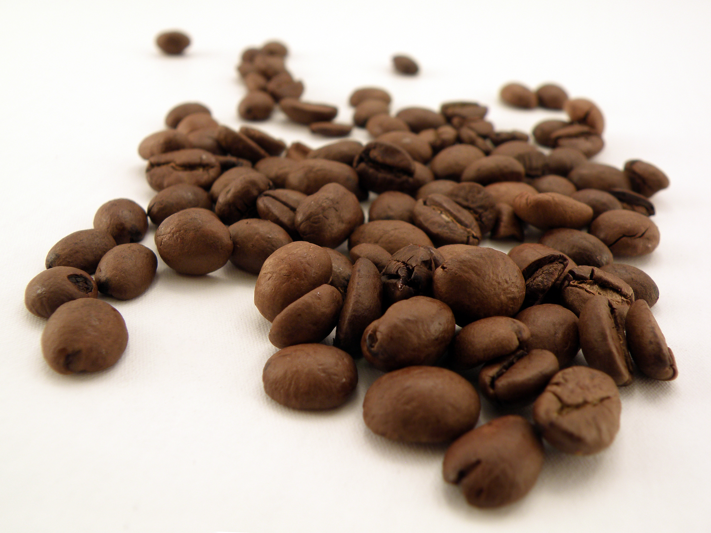
Coffee beans - ziarna kawy (1).jpg
2600 × 1950 · Alina Zienowicz (Ala z), e-mail
CC BY-SA 3.0 · source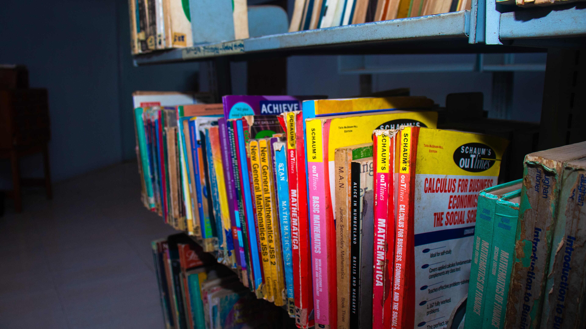
Book shelf for the Science and technology section of the Kwara State Library board ilorin.jpg
3840 × 2161 · Ndawoje
CC BY-SA 4.0 · source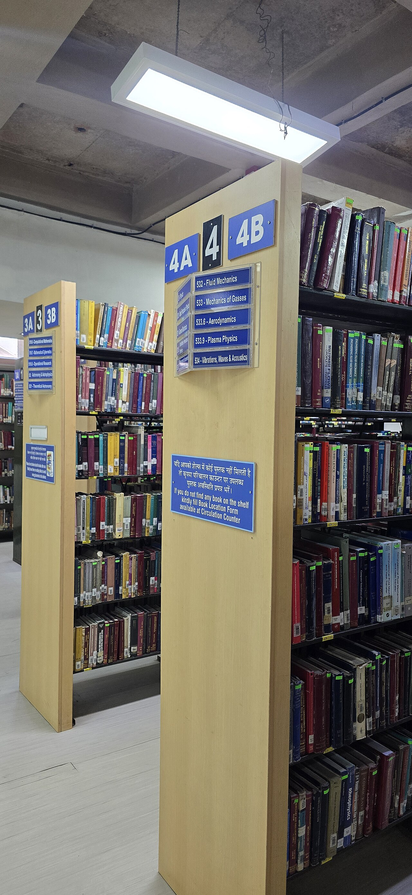
Book shelf of central library.jpg
1280 × 2771 · Shaksham Parimal
CC BY-SA 4.0 · source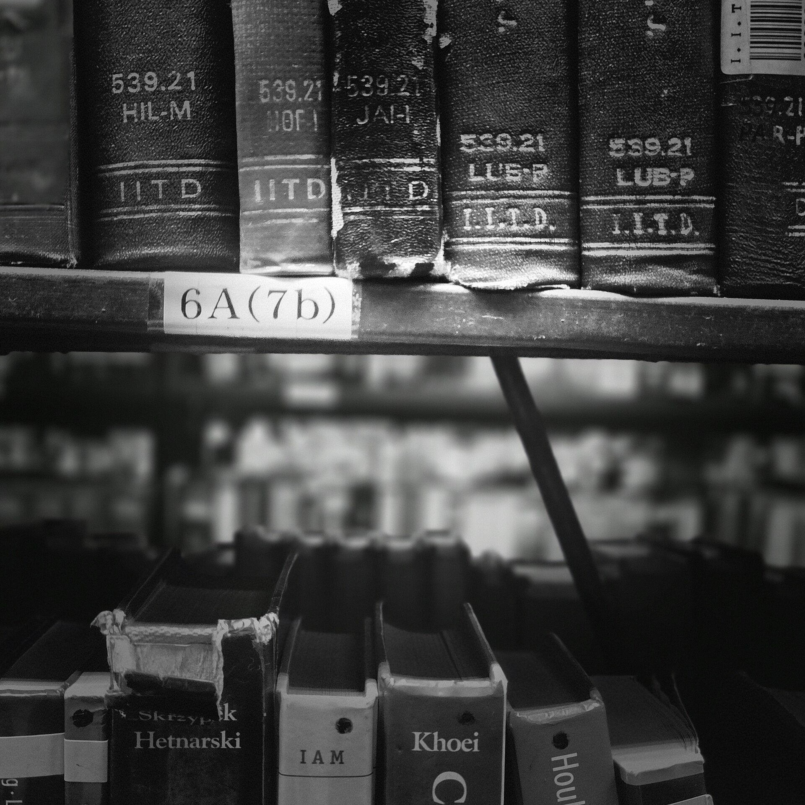
Book shelfs of central library.jpg
1920 × 1920 · Shaksham Parimal
CC BY-SA 4.0 · source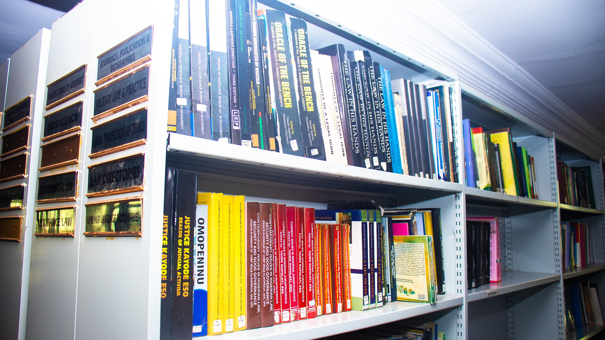
Law Book shelf at the Ghalib Chamber Library.jpg
3840 × 2161 · Ndawoje
CC BY-SA 4.0 · source